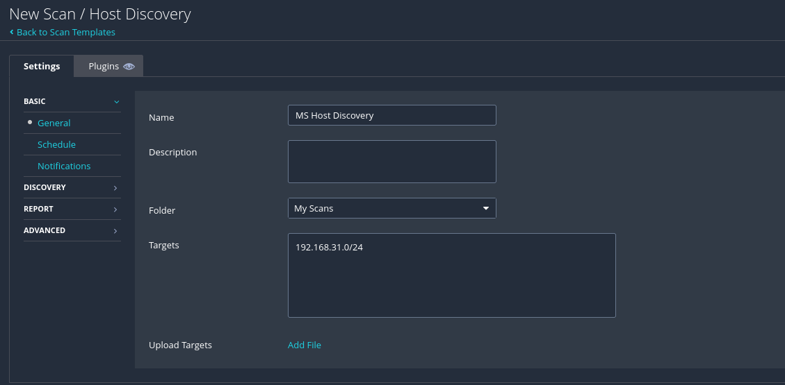

<< Back
Baby's first home lab
27 June - 11 July 2025
Contents
Deliverables
Homelab internal network infastructure diagram [See in blog] [PNG]
![[PNG]](../../uploads/intnetinfra.png){kind=link}
Organized spreadsheet of nmap-detected vulnerabilities [See in blog] [XLSX]
Vulnerability assessment report [See in blog] [PDF]
This is the opening of a new world for me. I’ve been looking into home labs for a little bit, now being fresh out of college, newly minted bachelor’s degree and all.
With my summer internship in cybersecurity fading further and further into the past, I hadn’t had the chance since then to “practice” cybersecurity, as it were, until this moment.
Now, free of my studies, I have the opportunity at last.
I remember one thing that struck me as particularly intriguing during the internship was vulnerability management.
At Aristotle, where I’d interned, pretty much every facet of their infosec protocol was feeding into the same interface — their Security Information and Event Management (SIEM) system, Exabeam.
And while that algorithmic smushing did yield a big-picture overview of how those facets came together, I don’t think I really had the time to delve deep into a single particular area.
But when I did have some time, I found myself tinkering in Tenable, trawling through that endless, computer-detected list of CVEs and entertaining myself by seeing which ones actually mattered to the company.
As time passes, I can always mold my newfound home lab for other purposes, but for now, I wanted to dig into this fascinating field of vulnerability assessment and management.
Before that, though, I wanted to first get a feel for setting up an absolute barebones network: an internal network within VirtualBox of two VMs — one Kali Linux as the attacker, and one Windows 10 as the target — with manually set IPs.
Downloading Win10 and Kali images
Back to top
I won't spend too much space on the process for downloading the ISO files for Windows 10 and Kali Linux (installer or pre-built VM for VirtualBox), since those instructions are readily available and were followed pretty much as directed. But there are certain considerations that I wanted to mention here:
Zeroeth(?) item should be that my current host machine is a Windows 11 device.
-
Firstly, it is crucial to compare the SHA256 checksums of the downloaded files to ensure they haven't been corrupted in transit. To get the checksum of your downloaded file: go to your Downloads folder, right-click anywhere in the folder and select Open in Terminal. Then run the following command:
Get-FileHash [filename]The checksums for the proper files can be found at the following:
Windows: Provided within ISO installation wizard, in "Verify your download" section
-
Kali: Regardless of installer or pre-built VM, the respective checksum can be found when you click "sum":

Each of these ISOs are just over 4GB, and I am gradually running out of space on this laptop after having used it for four years; so in order to conserve storage I decided to move these ISOs over to a 128GB (really a 116GB) USB stick.
But I first needed to format the USB drive first -- I initially didn't recognize this, and kept trying to transfer over, only to repeatedly get the same nonsensical error that there "wasn't enough disk space" on a 116GB drive for a 4GB file.
After some digging, I'd had to change the format of the drive from the default exFAT to NTFS. (OS installation media generally requires NTFS as it is a journaled filesystem, meaning changes are logged to prevent potential corruption.)In installing the Win10 VM, I decided to allocate 1GB of memory (mostly an educated-guess decision based on what resources I know I have on this flimsy laptop; even then it was probably overkill), 1 CPU, and a disk size of 20GB (anything that can accommodate 10,816MB is fine).
For the Kali VM, I allocated 5000MB of memory, 4 CPUs, and 100GB. (This is extremely important, as I learned the way later, because of the hardware requirements for Tenable Nessus down the line.)
-
The Win10 bootup can be particularly annoying once the VM is up and running. I followed the YouTube channel MyDFIR's stunningly clear video tutorial on the subject, but the gist of it is to state, when prompted, that you don't have a product key, and then to choose Windows 10 Pro as your version.
-
When prompted: "Which type of installation do you want?", select "Custom: Install Windows only (advanced)."
-
When prompted: "How would you like to set up?" choose "Set up for personal use."

-
After that, insist on creating an offline account, then turn OFF all the knobs presented in the "Choose privacy settings for your device" prompt.

-
-
For the Kali bootup, I was prompted with the option for a graphical install or simply "Install", among other options. The graphical install did not work for me, but the normal Install did work.

And there we have it.
Configuring the VMs
Back to top
Now, for this specific situation, of a Win10 machine with nothing on it (albeit with the intentionally weak password "password") and a Kali machine with nothing on it, there wouldn't be any measures we would need to take to ensure the security of this setup.
But our endgoal here, for right now, is to add a Metasploitable VM to this network and take some jabs at it in a sandbox environment — which means, we need at least our Kali attacker and the Metasploitable to be able to communicate, while blocking it from the Internet so that it's just me that's doing the jabbing.
This means we need an internal network. Fortunately, VirtualBox gives us the option to do just that. Let's configure our Win10 machine first.
In VirtualBox, click the Win10 machine, then Settings.
Newer versions of VB seem to have separated these settings into Basic and Expert. The option to switch to an internal network is only available in "Expert," so click that. (Older tutorials fail to mention this.)
Scroll down to the Network section or simply click the "Network" tab on the left sidebar. From there, in the "Attached to:" dropdown, select "Internal network." Right below that, you can name this internal network whatever you'd like. I called mine "qkrnet".
Once you're done, click OK.

Repeat these steps to configure the Kali machine the same way. For the Kali machine, once you switch it to an internal network you will only need to select the name of the existing internal network from the dropdown, in my case "qkrnet."
Now, we still need to statically set the IP for each VM.
Again, let's do the Win10 machine first:
-
Once logged in, right-click the globe icon on the bottom right, then click "Open Network & Internet settings."
-
Then click "Change adapter options."

-
Right click on the "Ethernet" item, then click "Properties."

-
Double-click on "Internet Protocol Version 4 (TCP/IPv4)."

-
Select the "Use the following IP address:" option, then manually set the IP address. A
/24subnet is fine. I chose192.168.31.10/24. Then press OK, and OK on the previous screen. Leave all else unchanged.
-
Open cmd and run
ipconfigto confirm the static IP has been set.
Now let's do the same in our Kali VM:
-
Once logged in, right-click the Ethernet button (for me this was still loading as the VM was attempting to find a nonexistent Internet connection, but process of elimination made it obvious that was the button to press), then click "Edit Connections..."

-
Select (single-click) "Wired connection 1" to highlight it, then click the gear icon on the bottom left of that window.

-
Navigate to the "IPv4 Settings" tab. Notice that the default Method is set to DHCP; open that dropdown and select "Manual." Then under Addresses, click the "Add" button, and the desired static IP for this machine — preferably one higher than what you set for the Win10 machine. In my case, that would be
192.168.31.11. Then press Tab; the netmask should automatically appear as 24. Leave all else unchanged, and press Save.
Now let's check that the two VMs are interconnected. Unfortunately, the firewall on the Win10 machine doesn't allow ICMPs from the Kali machine to the Win10 machine, but if we ping Kali from the Win10, we will see that the pings do go through. (In my case, when I tried immediately after I'd set the Kali IP, it took a while for pings to go through as the change was still taking effect.)
Now we have a basic home lab, with an attacker machine (Kali) and a defender machine (Win10).
With everything in line, I made sure to take snapshots of the VMs' current states, and note them down as a default state that I can always come back to.
From here we could go anywhere: we could start running this very setup as a malware analysis lab (something I do intend to do very soon); we could open the network back up to the Internet by changing the configurations back to NAT or a bridged network; and so on.
But right now, as a first little exercise, I want to add a Metasploitable VM to this network and see what I can find.
Adding the Metasploitable VM
Back to top
Now begins the real deal. I want to get an intentionally vulnerable system onto my new internal network so that I can take a look at what it is that makes it vulnerable exactly, and then see what I can do using those vulnerabilities (whether it be remedying them or abusing them).
The mindset I'm trying to get into here is that this machine is indeed a client's actual machine, and my actions with this machine are performed with the endgoal of producing a report for the client to read and truly understand the risks, as well as the importance of minimizing those risks.
The Metasploitable series of systems is exactly what I need for this task. In this section we'll be dealing with Metasploitable 2, as it is easier to build than the original; there is also a newer Metasploitable 3 but for now we'll stick to the former and see what we can do with it.
Installing Metasploitable 2
Rapid7 offers two links for downloading Metasploitable 2 (I'll shorten as MS2 going forward), but the one that I got to work was the second, via SourceForge.
The file is a 800MB zip file, that even without unzipping I was able to double-click to preview the contents and pull just the 1GB .vmdk file out to my USB drive containing my other VM disks.
Evidently, this renders my name for the USB drive useless, but it gets the point across so at this point I'm keeping it.
But where this new file format does matter (since it is a VMWare file format) is in getting VirtualBox to run this file when, at least upfront, it only accepts ISO files. This is where the tiniest bit of trickery comes in (credit to this article from Chron):
-
Create a new virtual machine, set to Linux but without selecting an ISO image. Then click Finish. But do NOT start the VM yet.

-
Now go to the Settings for that new VM.
Under the Storage section, when you click to highlight the row "Controller: SATA" there should be two buttons that appear to the right.
If you hover over the rightmost of those buttons, it should read "Adds hard disk." Click that button.
Then click the "Add" button at the top left of that new window, at which point File Explorer will open and you can select the vmdk file wherever you stored it.
Then press OK to save.
Make sure to DELETE the existing .vdi file under "Controller: SATA" so that VirtualBox knows to pull only from the .vmdk file. -
We'll follow the same steps as before to add the MS2 VM to the internal network, making sure to select the name of our actual network from earlier.

Again, one last step here to actually add the MS2 VM to our qkrnet intnet: Bootup the MS2 VM, login with msfadmin:msfadmin, then run ifconfig -a. You should notice there's an IPv6 address, but no IPv4.
The sudo is unnecessary in that first instance, but we will need root access to actually set the IPv4 address. In my case, since I want to set it to 192.168.31.12: sudo ifconfig 192.168.31.11 netmask 255.255.255.0 Then run ifconfig -a again to confirm the change.
Let's have Kali (which you should now boot up) and MS2 ping each other to confirm they're interconnected.

Now our intnet infrastructure looks something like this:
First impressions with nmap
Back to top
Just to get a feel for what we're dealing with, I ran the most basic nmap scan of the MS2.

Basically every port that could possibly be open is open. This is rich with opportunities for potential exploits, and to go through each port to see what we could find is a little time-consuming, and frankly overwhelming. To make things a little more clear, I ran nmap again but with a few added specifications:
nmap -sS -sV --script vuln 192.168.31.12 > ~/Desktop/nmapoutput.txt-sS: "stealth" scan/TCP SYN scan, more unobtrusive as it doesn't complete TCP connections. Since the connections is never completed, it becomes more likely that OSs or IDSs don't log the connection as a full session, if they log it at all; it also blends in more easily to regular traffic, since legitimate users also send SYN packets.-sV: version detection.--script vuln: Runsvulnscript that prints details about each detected vulnerability.> ~/Desktop/nmapoutput.txt: sends the output to a txt file.
Here's the first few lines of that output (entire output here). I've included just enough to see one example of what the vuln script outputs for a vulnerability.
Starting Nmap 7.95 ( https://nmap.org ) at 2025-06-30 12:19 PDT
Nmap scan report for 192.168.31.12
Host is up (0.000093s latency).
Not shown: 977 closed tcp ports (reset)
PORT STATE SERVICE VERSION
21/tcp open ftp vsftpd 2.3.4
| ftp-vsftpd-backdoor:
| VULNERABLE:
| vsFTPd version 2.3.4 backdoor
| State: VULNERABLE (Exploitable)
| IDs: BID:48539 CVE:CVE-2011-2523
| vsFTPd version 2.3.4 backdoor, this was reported on 2011-07-04.
| Disclosure date: 2011-07-03
| Exploit results:
| Shell command: id
| Results: uid=0(root) gid=0(root)
| References:
| https://github.com/rapid7/metasploit-framework/blob/master/modules/exploits/unix/ftp/vsftpd_234_backdoor.rb
| https://cve.mitre.org/cgi-bin/cvename.cgi?name=CVE-2011-2523
| http://scarybeastsecurity.blogspot.com/2011/07/alert-vsftpd-download-backdoored.html
|_ https://www.securityfocus.com/bid/48539
22/tcp open ssh OpenSSH 4.7p1 Debian 8ubuntu1 (protocol 2.0)
23/tcp open telnet Linux telnetd
...
Having first turned on the shared clipboard in the Kali VM to be bidirectional, I copied the entire contents of nmapoutput.txt to a txt file on my host machine. Our goal at this point is turn this 461-line output into something more readable. What immediately comes to mind is to collect some crucial info about each vulnerability into a table or spreadsheet. (While we do that, we can shut down our VMs for now, as we want to avoid having the MS2 on when it's not being used.)
| port | CVE | state | description | references |
|---|---|---|---|---|
| 21/tcp | CVE-2011-2523 | VULNERABLE (Exploitable) | vsFTP vrsion 2.3.4 backdoor | https://github.com/rapid7/metasploit-framework/blob/master/modules/exploits/unix/ftp/vsftpd_234_backdoor.rb |
| | https://cve.mitre.org/cgi-bin/cvename.cgi?name=CVE-2011-2523 | ||||
| | http://scarybeastsecurity.blogspot.com/2011/07/alert-vsftpd-download-backdoored.html | ||||
| |_ https://www.securityfocus.com/bid/48539 | ||||
| 25/tcp | CVE-2014-3566 | VULNERABLE | SSL POODLE information leak | https://www.openssl.org/~bodo/ssl-poodle.pdf |
| | https://www.imperialviolet.org/2014/10/14/poodle.html | ||||
| | https://www.securityfocus.com/bid/70574 | ||||
| |_ https://cve.mitre.org/cgi-bin/cvename.cgi?name=CVE-2014-3566 | ||||
| 25/tcp | n/a | VULNERABLE | Anonymous Diffie-Helman Key Exchange MitM Vulnerability | https://www.ietf.org/rfc/rfc2246.txt |
| 25/tcp | CVE-2015-4000 | VULNERABLE | Transport Layer Security (TLS) Protocol DHE_EXPORT Ciphers Downgrade MitM (Logjam) | https://cve.mitre.org/cgi-bin/cvename.cgi?name=CVE-2015-4000 |
| | https://www.securityfocus.com/bid/74733 | ||||
| | https://weakdh.org | ||||
| 25/tcp | n/a | VULNERABLE | Diffie-Hellman Key Exchange Insufficient Group Strength | https://weakdh.org |
| 80/tcp | CVE-2007-6750 | VULNERABLE | Slowloris DOS attack | http://ha.ckers.org/slowloris/ |
| |_ https://cve.mitre.org/cgi-bin/cvename.cgi?name=CVE-2007-6750 | ||||
| 80/tcp | n/a | n/a | http-enum | /tikiwiki/: Tikiwiki |
| | /test/: Test page | ||||
| | /phpinfo.php: Possible information file | ||||
| | /phpMyAdmin/: phpMyAdmin | ||||
| | /doc/: Potentially interesting directory w/ listing on 'apache/2.2.8 (ubuntu) dav/2' | ||||
| | /icons/: Potentially interesting folder w/ directory listing | ||||
| |_ /index/: Potentially interesting folder | ||||
| 1099/tcp | n/a | VULNERABLE | RMI registry default configuration remote code execution vulnerability | https://github.com/rapid7/metasploit-framework/blob/master/modules/exploits/multi/misc/java_rmi_server.rb |
| 5432/tcp | n/a | VULNERABLE | Diffie-Hellman Key Exchange Insufficient Group Strength | https://weakdh.org |
| 5432/tcp | CVE-2014-3566 | VULNERABLE | SSL POODLE information leak | https://www.openssl.org/~bodo/ssl-poodle.pdf |
| | https://www.imperialviolet.org/2014/10/14/poodle.html | ||||
| | https://www.securityfocus.com/bid/70574 | ||||
| |_ https://cve.mitre.org/cgi-bin/cvename.cgi?name=CVE-2014-3566 | ||||
| 5432/tcp | CVE-2014-0224 | VULNERABLE | SSL/TLS MITM vulnerability (CCS Injection) | http://www.cvedetails.com/cve/2014-0224 |
| | http://www.openssl.org/news/secadv_20140605.txt | ||||
| |_ https://cve.mitre.org/cgi-bin/cvename.cgi?name=CVE-2014-0224 | ||||
| 8180/tcp | n/a | n/a | http-enum | /admin/: Possible admin folder |
| | /admin/index.html: Possible admin folder | ||||
| | /admin/login.html: Possible admin folder | ||||
| | /admin/admin.html: Possible admin folder | ||||
| | /admin/account.html: Possible admin folder | ||||
| | /admin/admin_login.html: Possible admin folder | ||||
| | /admin/home.html: Possible admin folder | ||||
| | /admin/admin-login.html: Possible admin folder | ||||
| | /admin/adminLogin.html: Possible admin folder | ||||
| | /admin/controlpanel.html: Possible admin folder | ||||
| | /admin/cp.html: Possible admin folder | ||||
| | /admin/index.jsp: Possible admin folder | ||||
| | /admin/login.jsp: Possible admin folder | ||||
| | /admin/admin.jsp: Possible admin folder | ||||
| | /admin/home.jsp: Possible admin folder | ||||
| | /admin/controlpanel.jsp: Possible admin folder | ||||
| | /admin/admin-login.jsp: Possible admin folder | ||||
| | /admin/cp.jsp: Possible admin folder | ||||
| | /admin/account.jsp: Possible admin folder | ||||
| | /admin/admin_login.jsp: Possible admin folder | ||||
| | /admin/adminLogin.jsp: Possible admin folder | ||||
| | /manager/html/upload: Apache Tomcat (401 Unauthorized) | ||||
| | /manager/html: Apache Tomcat (401 Unauthorized) | ||||
| | /admin/view/javascript/fckeditor/editor/filemanager/connectors/test.html: OpenCart/FCKeditor File upload | ||||
| | /admin/includes/FCKeditor/editor/filemanager/upload/test.html: ASP Simple Blog / FCKeditor File Upload | ||||
| | /admin/jscript/upload.html: Lizard Cart/Remote File upload | ||||
| |_ /webdav/: Potentially interesting folder | ||||
| 8180/tcp | CVE-2007-6750 | LIKELY VULNERABLE | Slowloris DOS attack | http://ha.ckers.org/slowloris/ |
| |_ https://cve.mitre.org/cgi-bin/cvename.cgi?name=CVE-2007-6750 |
So now we have a fairly easy-to-read initial list of vulnerabilities. But there are a few inherent flaws in the data here. The first is that we only really have these severity levels of "VULNERABLE" and "LIKELY VULNERABLE," which don't really tell us anything.
A pentester could probably start digging into the things that sound the most interesting (certainly CVE-2011-2523, the vsFTP backdoor that offers root access, would be a great start).
But from a blue-team standpoint one has to consider all of these to an extent and understand how much of a risk they actually pose to the client.
So before we run off to draw conclusions and draft a vulnerability assessment report with just this data, I want a second opinion, maybe from a commercial vulnerability scanner.
So let's save this table for now and turn to Tenable Nessus.
Tenable Nessus
Back to top
Specifically, we are downloading Tenable Nessus Essentials, which is a free 1-year license with some limited functionality (up to 16 addresses, limited scanning), but enough for our purposes.
IMPORTANT! For this section I found that it's much better if just the Kali is reconfigured as NAT (instead of intnet) so that the initial Nessus install goes smoothly. You technically can do an offline install but for some reason that did not go very well for me. Once Nessus is stably installed, however, it takes less than a minute to change it back to the intnet settings with our custom IP and subnet.
The Linux installation docs from Tenable emphasizes that hostname is a dependency, but on Kali it already comes OOTB.
I already downloaded Nessus (version 10.9.0 for Linux - Debian - amd64). So I enabled drag and drop (host to guest) on the Kali machine, then dragged and dropped the .deb file to the Kali desktop.
Then, opening the terminal in Kali, I first navigated to the desktop — cd Desktop — then I ran the install command.
sudo dpkg -i Nessus-10.9.0-debian6_amd64.debThen restart the nessusd daemon. A window will open prompting you to enter your password to authenticate. Enter your password.
systemctl start nessusdOnce that finishes, open Firefox and go to https://localhost:8834.
(If you get a warning that reads "Potential Security Risk Ahead", click Advanced then Proceed anyway.)
You should land on this page.
Simply press Continue.
On the next screen, select Register for Nessus Essentials, then Continue.
On the subsequent "Get an activation code" screen, we already have an activation code, so we can just press Skip.
Copy and paste your activation code when prompted. You can find the activation code in the email you should have received from Tenable Nessus with the subject line "Welcome to Tenable Nessus!"
On the next screen, you'll be prompted to come up with a username and password for the Nessus admin account. Once that's done you'll get an "Initializing" screen, and you'll know you're through.
(I had so much trouble with this last part, as I would repeatedly enter those credentials only to get an "Error: Activation failed" popup with no further explanation. I had to go back to that first Nessus Essentials intro webpage and resend an activation code, which ended up working.)
A really annoying hiccup
You see, I made the instructions sound really smooth when I put them together but it cost me a lot of time and mental fortitude to actually get Nessus to work.
When I finally solved that "Error: Activation failed" issue, Nessus would then start installing the plugins only to crash the entire VM saying it had run out of space.
Then when I tried to overcompensate by making the VM hard drive 100GB (which equates to about 20GB in real size) then my computer ran out of space. So I had to delete my ENTIRE home lab set up and remake it from scratch on my 128GB thumb drive.
Scanning with Tenable Nessus
Back to top
Anyway, I finally, FINALLY got it to work, and I got to the Nessus homescreen I'd been dying to see all this time.
From here it's actually smooth sailing to get the results we want — just a few clicks on this GUI will do.
The first thing we want to do is run a Host Discovery scan to see what we're dealing with on this network and what ports are open.
-
Click the New Scan button, then on the next screen click Host Discovery.
-
Now all you need is to name the scan (whatever you want) and to specify the targets (in this case our little
/24subnet).There are other options (see left sidebar under BASIC) to schedule this scan for regular intervals or to send the resulting report to specified email recipients. We won't need any of these right now, but it's good to know that option exists.
Hit Save.
-
We'll be led back to the homescreen, where our new scan should now appear as a list item. On the right side of that row, there should be a little play button that, on hover, reads Launch. Click it.
-
When the scan completes, click on that row again to see the results. You should see something like this:
Diving deeper
Let's now dig in to the actual vulnerabilities present in the MS2 machine. Check to select the row for 192.168.31.12, then go to More > Create Scan ...
Then on the next screen select Advanced Scan.
You'll notice under Basic > General, 192.168.31.12 has already been inserted in the Targets field. In the Name field, we'll call this scan "MS Advanced Scan."
We won't be changing much here; I just checked (under Assessment > Brute Force) Test default accounts (slow) and Always enable Hydra (slow), just to see what would happen. (Hydra is a brute-force password cracker.)
Hit Save, then Launch.
After 9 minutes, the scan finishes, and upon clicking on the MS Advanced Scan row again I get a huge list of vulnerabilities, sorted by severity.
Notably we see 9 critical vulnerabilities and three high-severity vulnerabilities. So we definitely want to give those a look.
I exported these results as a CSV, then made it look a little bit nicer by importing it into Google Sheets and doing some formatting.
Here's a partial table (with just Critical and High Severity vulnerabilities) as a PDF.
Creating a report
Back to top
Now comes the most tedious but crucial step: creating an actually legible vulnerability assessment report that explains the vulnerabilities, why they're important to address, and how to address them.
I will skip a long explanation of how I made the report, just so I can pretend I didn't spend three hours of my life on it, but suffice it to say that I closely followed the sample by PurpleSec, with some further inspiration by this random PDF on SlideShare.
I improvised a hypothetical client company called Fake Inc. for which I would be creating this report, and made a decently pretty logo for it. Then I got to work actually writing out the report.
In total there were 45 vulnerabilities to speak of: 11 critical, 1 high-severity, 39 medium-severity, and 8 low-severity. From those I also created a list of remediative steps that I would recommend this hypothetical Fake Inc. take.
Conclusion
Back to top
As with all projects, what I thought would be a quick one-and-done turned out to be a complex affair that taught me so many things.
For one thing, though this isn't my first time using VirtualBox, I can definitely say now I've gotten a lot more comfortable using it, from configuring network settings to adding hard drives to even shared folders between host and VM.
I've also finally dipped my toes into Tenable Nessus, and gotten a feel for what doing a scan looks like, and what things I can do with the results.
I think I've also just gotten a lot better at troubleshooting — especially after the whole fiasco with trying to get Nessus to work — and that's a skill I'm going to be needing a lot just with this home lab alone, as I shuffle things around and play around with them and inevitably break something along the way.
This report deliverable may be finished, but I'm excited to keep going with this home lab. Up next, malware analysis.
Atualmente esta página está em construção.
Conteúdos
Entregas
Diagrama da infraestrutura da rede internal do homelab[Ver no blog] [PNG]
Planilha organizada de vulnerabilidades detectadas por nmap [Ver no blog] [XLSX]
Relatório da avaliação de vulnerabilidades [Ver no blog] [PDF]
Esta é a abertura dum mundo novo para mim. Eu tenho pensado em criar um “home lab” faz pouco tempo, agora que acabei de sair da faculdade, com o meu bacharelado e tudo assim.
Enquanto o meu estágio de cibersegurança se desvanece mais e mais ao passado, eu nem tinha a chance desde então de “praticar” a cibersegurança, por assim dizer, até este momento.
Agora que estou livre dos meus estudos, tenho a oportunidade por fim.
Lembro-me que uma coisa que me pareceu particularmente intrigante durante o estágio foi “vulnerability management” (gerência de vulnerabilidades).
Na Aristotle, onde fui estagiário, quase todo aspecto do protocolo infosec aí estava alimentando no mesmo interface — o sistema Security Information and Event Management (SIEM) dela, Exabeam.
E enquanto o aperto algorítmico produziu mesmo uma visão geral de como esses aspectos se juntaram, não acho que eu tivesse o tempo para mergulhar num assunto particular.
Embora, quando tive mesmo tempinho, me encontrei mexendo em Tenable, vasculhando esse listo de CVEs automaticamente detectado e quase sem fim, e então me divertindo observando quais na verdade importava para a empresa.
Com o tempo sempre consigo mudar esse novo “home lab” para outros propósitos, mas para agora, eu queria investigar essa àrea tão fascinante da avaliação e gerência de vulnerabilidades.
Antes disso, queria primeiramente entender como criar e configurar uma rede absolutamente barebones: uma rede internal dentro de VirtualBox com duas VMs — uma Kali Linux como agressor, e uma Windows 10 como o alvo — com endereços IP manualmente definidos.
Baixando imagens Win10 e Kali
Voltar acima
Não vou passar muito tempo sobre o processo de baixar os arquivos ISO para Windows 10 e Kali Linux (instalador ou VM pré-construido para VirtualBox), que essas instruções já são disponíveis e foram seguidas quase à letra. Embora há umas considerações que eu queria mencionar aqui:
Item número zero deve ser que a minha máquina atual é Windows 11.
-
Primeiramente, é crucial comparar os checksums SHA256 dos arquivos baixados que não foram corrompidos no trânsito. Para obter o checksum do seu arquivo baixado: Abra a sua pasta Downloads, clique com a botão direita em qualquer lugar na pasta e seleciona “Open in Terminal.” E depois, execute o comando siguiente:
Get-FileHash [filename]Encontra-se os checksums para os arquivos apropriados no sigiuiente:
Windows: Fornecido dentro do instalador do ISO, na seção "Verify your download"
-
Kali: Independemente do instalador ou VM pré-construido, se encontra o checksum respectivo quando clique em "sum":
Cada destes ISOs é pouco mais de 4GB, e gradualmente estou ficando sem espaço nesse laptop após usá-lo por quatro anos; então, para conservar armazenamento decidi mover estes ISOs para um pendrive de 128GB (na verdade 116GB).
Mas primeiro, precisei de formatar o pendrive — no início não sabia disso, e ficava tentando transferir os ISOs, só para receber repetidamente a mesma mensagem que "não há espaço suficiente no disco rígido" num pendrive de 116GB por causa dum arquivo de 4GB.
Após alguma pesquisa, descobri que tinha de mudar o formato do pendrive desde a padrão exFAT para NTFS. (A media de instalação de OS geralmente requer NTFS porque é um journaled filesystem, ou seja, as mudanças são logadas para evitar a possibilidade de corrupção.)Em instalar a VM Win10, decidi alocar 1GB de memôria (principalmente um palpite com base no meu conhecimento de que recursos são que tenho nesse laptop tão fraco; mesmo assim, provavelmente foi demais), 1 núcleo de processador, e um disco rígido com 20GB (qualquer dimensão que consegue acomodar 10,816 funciona).
Para a VM Kali, aloquei 5000MB de memôria, 4 núcleos de processador, e um disco rígido de 100GB. (Isso é extremamente importante, como descobri muito mais tarde, por causa dos requisitos de hardware para Tenable Nessus no futuro.)
-
A inicialização de Win10 pode ser particularmente chata após a VM estar operacional. Eu segui as instruções da canal MyDFIR na YouTube que foram incrivelmente claras, mas a essência é afirmar, quando solicitado, que você não tem product key, e depois escolher Windows 10 Pro como a sua versão.
-
Quando solicitado: "Which type of installation do you want?", selecione "Custom: Install Windows only (advanced)."
-
Quando solicitado: "How would you like to set up?" selecione "Set up for personal use."
-
Depois disso, insista em criar uma conta offline, e então desligue todas as botões que se presentam na tela "Choose privacy settings for your device".
-
-
Para a inicialização de Kali, fui solicitado com a opção de instalação gráfica ou instalação simples (que se aparece como apenas "Install"), entre outras opções. Para mim a instalação gráfica não funcionou, mas a outra deu certo sim.
E agora olhe o que temos.
Configurando as VMs
Voltar acima
Agora, para essa situação específica, duma máquina Win10 com nada adentro dela (embora com a senha intencionalmente fraca de "password") e uma Kali com nada dela também, não haveria nenhuma ação que a gente precisaria tomar para garantir a segurança desta configuração.
Mas o objetivo final aqui é, por agora mesmo, adicionar uma VM Metasploitable a essa rede e brincar com ela num ambiente sandbox — ou seja, precisamos de pelo menos a nossa agressora Kali, enquanto a bloqueamos da internet para que seja apenas eu que faz a brincadeira.
Isso significa que precisamos duma rede internal. Felizmente, VirtualBox nos dá a opção de fazer exatamente isso. Então, vamós lá a configurar a Win10 primeiramente.
Em VirtualBox, clique na Win10, e depois em "Settings".
As versões novas de VirtualBox parece ter separado essas configurações em "Basic" e "Expert". A opção de mudar para rede internal só está disponível em "Expert," então clique aí. (Os tutoriais mais antigos falham em mencionar isso.)
Role para baixo à seção "Network" ou simplesmente clique "Network" na esquerda. Daí, sob "Attached to:", escolhe "Internal network". Diretamente abaixo disso, pode colocar qualquer nome para essa rede internal que você quer. Para a minha rede eu dei o nome "qkrnet".
Quando termina, clique em "OK".
Repita esses passos para configurar a Kali no mesmo jeito. Para a Kali, quando a muda a rede internal, é só selecionar o nome da rede que você já criou — no meu caso "qkrnet".
Agora, ainda precisamos de definir estaticamente o endereço IP para cada VM.
Uma vez mais, bora fazer a Win10 no primeiro:
-
Quando acaba de fazer login, clique com botão direita a desenha de globo na parte inferior direita, e clique em "Open Network & Internet settings."
-
Então clique em "Change adapter options."
-
Clique com a botão direita o item "Ethernet" item, então clique em "Properties."
-
Dê um clique duplo em "Internet Protocol Version 4 (TCP/IPv4)."
-
Seleciona a opção "Use the following IP address:", e depois defina manualmente o endereço IP. Dá para usar um subnet
/24. Para minha eu escolhei192.168.31.10/24. Então clique em OK, e OK na tela prévia. Deixa todo o resto sem mudança.
-
Abra
cmde executeipconfigpara confirmar o IP estático tem sido definido.
Agora vamos fazer o mesmo para a Kali:
-
Quando acaba de fazer login, clique com a botão direita em a botão Ethernet (para mim essa foi ainda carregando por tentar de buscar para conexão internet que não existia, mas o processo de eliminação deixou óbvio que essa foi a botão clicar), e depois clique em "Edit Connections..."
-
Selecione (um clique só) "Wired connection 1" para destacar, e então clique no icone de engrenagem na parte inferior esquerda dessa tela.
-
Navegue para a guia "IPv4 Settings". Olhe que o metódo padrão agora é DHCP; abra essa dropdown e coloque "Manual." Depois, sob Addresses, clique na botão "Add", e o IP estático que deseja usar para essa máquina, de preferência uma acima do que usou para a Win10. No meu caso seria
192.168.31.11.Então pressione a tecla Tab; a netmask deve aparecer automaticamente como 24. Deixou todo o resto sem mudança e clique em Save.
Agora bora confirmar que ambas as VMs são interconectadas. Infelizmente, a firewall na Win10 não aceita pings ICMP desde a Kali, mas se fizer ping para a Kali desde a Win10, vamos olhar que os pings dão certo sim. (No meu caso, quando tentei imediatamente após definir o IP da Kali, levou algum tempo para os pings passar.)
E agora temos um home lab básico, com um máquina agressora (Kali) e uma maqúina defensora (Win10).
Com tudo pronto, garanti que tomar snapshots dos estados atuais das VMs, e notá-los como estados padrão para qual sempre posso voltar.
Desde aqui a gente consegue ir em qualquer direcção: podería usar esse setup mesmo como um laboratório de analização de malware (que já pretendo fazer em breve); podería abrir a rede de volta à internet mudando as configurações a NAT; e mais assim.
Mas agora mesmo, como um primeiro exercíciozinho, quero adicionar uma VM Metasploitable à esta rede e ver o que posso encontrar.
Adicionando a VM Metasploitable
Voltar acima
Agora começa a sério. Quero inserir um sistema intecionalmente vulnerável na minha nova rede internal para que eu possa dar uma olhada no que é que exatamente o faz vulnerável, e depois ver o que eu posso fazer com essas vulnerabilidades (seja remediá-las ou abusá-las).
A atitude em que estou tentando entrar aqui é que esta máquina é de fato uma máquina real dum cliente real, e as minhas ações com esta máquina se realizam com o objetivo final de produzir um relatório para o cliente ler e realmente entender os riscos, e também a importância de minimizar esses riscos.
A série de sistemas Metasploitable é exatamente o que preciso para essa tarefa. Nesta seção a gente vai tratar a Metasploitable 2, que é mais fácil configurar do que a original; há também uma Metasploitable 3 mais nova mais por agora vamos continuar com a primeira e ver o que podemos fazer com ela.
Instalando Metasploitable 2
O site Rapid7 oferece dois links para baixar a Metasploitable 2 (desde aqui vou encurtá-lo a MS2), mas a que consegui foi a segunda, via SourceForge.
O arquivo é um zip de 800MB, mesmo que sem extrair consegui dar um clique duplo para previsar os conteúdos e retirar só o arquivo .vmdk de 1GB ao meu pendrive que contém os meus outros discos de VM.
Obviamente, fazer isso toma inútil o meu nome para o pendrive, mas ele passa a ideia então vou deixá-lo.
Embora, onde este novo formato de arquivo se importa de fato (por ser um formato de VMware) está em fazer a VirtualBox executar este arquivo apesar de ser, pelo menos como parece, só aceita arquivos ISO. Isso é onde se entra um truquezinho (o crédito pelo qual vai para este artigo de Chron).
-
Crie uma nova VM, configurado para Linux mas sem selecionar uma imagem ISO. E então clique em Finish. Mas NÃO ligue a VM.
-
Agora vá a Settings para essa nova VM.
Sob a seção Storage, quando você clicar para destacar a linha "Controller: SATA" deve ser duas botões que aparecem na direita.
Se você pairar cima da mais direita dessas botões, deve se ler "Adds hard disk." Clique nessa botão.
Então clique na botão "Add" na parte superior esquerda dessa nova janela, e nessa altura File Explorer abrirá e você pode colocar o arquivo vmdk desde onde o guardou.
Lembre-se de APAGAR o arquivo .vdi existente sob "Controller: SATA" para a VirtualBox saber de retirar só desde o arquivo vmdk.
-
Seguiremos os mesmos passos de antes para adicionar a VM MS2 à rede internal, tendo cuidado para escolher o nome da nossa rede de fato desde antes.
De novo, um último passo aqui para adicionar de fato a VM MS2 à nossa rede qkrnet: Ligue a VM MS2, faça login com msfadmin:msfadmin, então execute ifconfig -a. Você deve notar que há um endereço IPv6, mas não um IPv4.
Não se precisa do sudo nessa primeira instância, mas precisaremos de acesso root para definir o endereço IPv4. No meu caso, porque quero que defini-lo como 192.168.31.12: sudo ifconfig 192.168.31.11 netmask 255.255.255.0. Então execute ifconfig -a uma vez mais para confirmar a mudança.
Façamos a Kali e a MS2 fazer ping entre elas para confirmar que agora estão interconectadas.
E agora, a nossa infraestrutura da rede internal parece assim:
Primeiras impressões com nmap
Voltar acima
Só para entender o que estamos tratando, executei a varredura nmap mais básica da MS2.
Quase todos os ports que poderiam estar abertos são abertos. Aqui é cheio de oportunidades para exploits potenciais, e investigar cada port um por um para ver o que nós podemos encontrar é um pouco demorado, e na verdade esmagadoro. Para clarificar um pouqinho, executei nmap uma vez mais mas com uns especificações adicionais:
nmap -sS -sV --script vuln 192.168.31.12 > ~/Desktop/nmapoutput.txt-sS: "stealth" scan/TCP SYN scan, uma varredura mais discreta porque não completa conexões TCP. Porque as conexões nunca se completam, fica mais provável que os OSs ou os IDSs (Intrusion Detection System) não registram a conexão como uma sessão inteira, se eles a registram mesmo; também se camufla mais fácilmente com o tráfico regular, porque usadores legítimos também enviam pacotes SYN.-sV: detecção de versão.--script vuln: Runsvulnscript que imprime detalhes sobre cada vulnerabilidade detectada.> ~/Desktop/nmapoutput.txt: envia a saída para um arquivo txt.
Aqui são as primeiras linhas dessa saída (saída inteira aqui). Incluí só bastante para ver um exemplo do que o script sai para uma vulnerabilidade.
Starting Nmap 7.95 ( https://nmap.org ) at 2025-06-30 12:19 PDT
Nmap scan report for 192.168.31.12
Host is up (0.000093s latency).
Not shown: 977 closed tcp ports (reset)
PORT STATE SERVICE VERSION
21/tcp open ftp vsftpd 2.3.4
| ftp-vsftpd-backdoor:
| VULNERABLE:
| vsFTPd version 2.3.4 backdoor
| State: VULNERABLE (Exploitable)
| IDs: BID:48539 CVE:CVE-2011-2523
| vsFTPd version 2.3.4 backdoor, this was reported on 2011-07-04.
| Disclosure date: 2011-07-03
| Exploit results:
| Shell command: id
| Results: uid=0(root) gid=0(root)
| References:
| https://github.com/rapid7/metasploit-framework/blob/master/modules/exploits/unix/ftp/vsftpd_234_backdoor.rb
| https://cve.mitre.org/cgi-bin/cvename.cgi?name=CVE-2011-2523
| http://scarybeastsecurity.blogspot.com/2011/07/alert-vsftpd-download-backdoored.html
|_ https://www.securityfocus.com/bid/48539
22/tcp open ssh OpenSSH 4.7p1 Debian 8ubuntu1 (protocol 2.0)
23/tcp open telnet Linux telnetd
...
Tendo primeiramente ligado clipboard compartilhado na VM Kali a ser bidireccional, eu copiei os conteúdos inteiros de nmapoutput.txt a um arquivo txt na minha máquina host. Nosso objetivo neste momento é transformar esta saída de 461 linhas a algo mais legível. O que imediatamente vem à mente é coletar umas informações cruciais sobre cada vulnerabilidade numa tabela ou planilha. (Enquanto fazemos isso, podemos desligar as VMs por agora, que queremos evitar de ter ligado a MS2 quando não está em uso.)
| port | CVE | state | description | references |
|---|---|---|---|---|
| 21/tcp | CVE-2011-2523 | VULNERABLE (Exploitable) | vsFTP vrsion 2.3.4 backdoor | https://github.com/rapid7/metasploit-framework/blob/master/modules/exploits/unix/ftp/vsftpd_234_backdoor.rb |
| | https://cve.mitre.org/cgi-bin/cvename.cgi?name=CVE-2011-2523 | ||||
| | http://scarybeastsecurity.blogspot.com/2011/07/alert-vsftpd-download-backdoored.html | ||||
| |_ https://www.securityfocus.com/bid/48539 | ||||
| 25/tcp | CVE-2014-3566 | VULNERABLE | SSL POODLE information leak | https://www.openssl.org/~bodo/ssl-poodle.pdf |
| | https://www.imperialviolet.org/2014/10/14/poodle.html | ||||
| | https://www.securityfocus.com/bid/70574 | ||||
| |_ https://cve.mitre.org/cgi-bin/cvename.cgi?name=CVE-2014-3566 | ||||
| 25/tcp | n/a | VULNERABLE | Anonymous Diffie-Helman Key Exchange MitM Vulnerability | https://www.ietf.org/rfc/rfc2246.txt |
| 25/tcp | CVE-2015-4000 | VULNERABLE | Transport Layer Security (TLS) Protocol DHE_EXPORT Ciphers Downgrade MitM (Logjam) | https://cve.mitre.org/cgi-bin/cvename.cgi?name=CVE-2015-4000 |
| | https://www.securityfocus.com/bid/74733 | ||||
| | https://weakdh.org | ||||
| 25/tcp | n/a | VULNERABLE | Diffie-Hellman Key Exchange Insufficient Group Strength | https://weakdh.org |
| 80/tcp | CVE-2007-6750 | VULNERABLE | Slowloris DOS attack | http://ha.ckers.org/slowloris/ |
| |_ https://cve.mitre.org/cgi-bin/cvename.cgi?name=CVE-2007-6750 | ||||
| 80/tcp | n/a | n/a | http-enum | /tikiwiki/: Tikiwiki |
| | /test/: Test page | ||||
| | /phpinfo.php: Possible information file | ||||
| | /phpMyAdmin/: phpMyAdmin | ||||
| | /doc/: Potentially interesting directory w/ listing on 'apache/2.2.8 (ubuntu) dav/2' | ||||
| | /icons/: Potentially interesting folder w/ directory listing | ||||
| |_ /index/: Potentially interesting folder | ||||
| 1099/tcp | n/a | VULNERABLE | RMI registry default configuration remote code execution vulnerability | https://github.com/rapid7/metasploit-framework/blob/master/modules/exploits/multi/misc/java_rmi_server.rb |
| 5432/tcp | n/a | VULNERABLE | Diffie-Hellman Key Exchange Insufficient Group Strength | https://weakdh.org |
| 5432/tcp | CVE-2014-3566 | VULNERABLE | SSL POODLE information leak | https://www.openssl.org/~bodo/ssl-poodle.pdf |
| | https://www.imperialviolet.org/2014/10/14/poodle.html | ||||
| | https://www.securityfocus.com/bid/70574 | ||||
| |_ https://cve.mitre.org/cgi-bin/cvename.cgi?name=CVE-2014-3566 | ||||
| 5432/tcp | CVE-2014-0224 | VULNERABLE | SSL/TLS MITM vulnerability (CCS Injection) | http://www.cvedetails.com/cve/2014-0224 |
| | http://www.openssl.org/news/secadv_20140605.txt | ||||
| |_ https://cve.mitre.org/cgi-bin/cvename.cgi?name=CVE-2014-0224 | ||||
| 8180/tcp | n/a | n/a | http-enum | /admin/: Possible admin folder |
| | /admin/index.html: Possible admin folder | ||||
| | /admin/login.html: Possible admin folder | ||||
| | /admin/admin.html: Possible admin folder | ||||
| | /admin/account.html: Possible admin folder | ||||
| | /admin/admin_login.html: Possible admin folder | ||||
| | /admin/home.html: Possible admin folder | ||||
| | /admin/admin-login.html: Possible admin folder | ||||
| | /admin/adminLogin.html: Possible admin folder | ||||
| | /admin/controlpanel.html: Possible admin folder | ||||
| | /admin/cp.html: Possible admin folder | ||||
| | /admin/index.jsp: Possible admin folder | ||||
| | /admin/login.jsp: Possible admin folder | ||||
| | /admin/admin.jsp: Possible admin folder | ||||
| | /admin/home.jsp: Possible admin folder | ||||
| | /admin/controlpanel.jsp: Possible admin folder | ||||
| | /admin/admin-login.jsp: Possible admin folder | ||||
| | /admin/cp.jsp: Possible admin folder | ||||
| | /admin/account.jsp: Possible admin folder | ||||
| | /admin/admin_login.jsp: Possible admin folder | ||||
| | /admin/adminLogin.jsp: Possible admin folder | ||||
| | /manager/html/upload: Apache Tomcat (401 Unauthorized) | ||||
| | /manager/html: Apache Tomcat (401 Unauthorized) | ||||
| | /admin/view/javascript/fckeditor/editor/filemanager/connectors/test.html: OpenCart/FCKeditor File upload | ||||
| | /admin/includes/FCKeditor/editor/filemanager/upload/test.html: ASP Simple Blog / FCKeditor File Upload | ||||
| | /admin/jscript/upload.html: Lizard Cart/Remote File upload | ||||
| |_ /webdav/: Potentially interesting folder | ||||
| 8180/tcp | CVE-2007-6750 | LIKELY VULNERABLE | Slowloris DOS attack | http://ha.ckers.org/slowloris/ |
| |_ https://cve.mitre.org/cgi-bin/cvename.cgi?name=CVE-2007-6750 |
Então, agora temos um listo bastante legível de vulnerabilidades. Mas há umas falhas inerentes nos datos aqui. A primeira é que na verdade só temos esses niveis de severidade tipo "VULNERABLE" e "LIKELY VULNERABLE", que não nos dizem nada.
Um pentester provavelmente podería investigar as coisas que parecem o mais interessante (com certeza, CVE-2011-2523, a vsFTP backdoor que oferece acesso root, seria um ótimo começo.)
Mas dum ponto de vista de blue-team, se precisa considerar todas destas vulnerabilidades no mesmo tempo — até certo ponto — e entender quanto risco é que apresentam ao cliente.
Então antes de fugir com isso e chegar a uma conclusão e criar um relatório de avaliação de vulnerabilidades, ainda quero uma segunda opinião, talvez desde uma scanner comercial de vulnerabilidades.
Então vamos salvar esta tabela por agora e passar para Tenable Nessus.